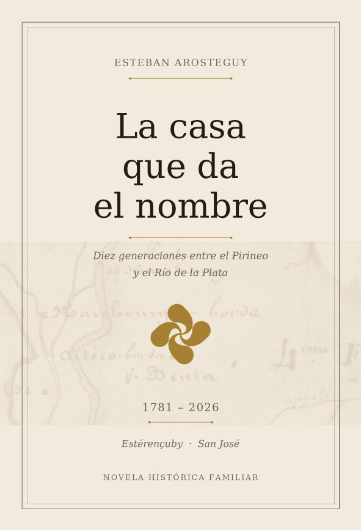

Esteban Arosteguy
Diez generaciones entre el Pirineo y el Río de la Plata · 1781–2026

En 1881, un muchacho de diecinueve años salió de una borda de piedra en el valle de Estérençuby, en el País Vasco francés, y no volvió nunca. Se llamaba Michel Arosteguy. En Uruguay le dijimos Miguel.
Este libro reconstruye las diez generaciones que van desde la casa Eyheralde de Alciette, donde en 1781 un hombre llegado de Ahaxe se casó con la heredera y tomó el nombre de la casa, hasta los chiquilines que hoy llevan el apellido en San José de Mayo.
Está armado sobre actas: nacimientos y defunciones de Estérençuby y Saint-Michel, el registro de reclutamiento que declaró insumiso a Michel en 1884, el plano catastral napoleónico de 1842, las partidas uruguayas. Donde el documento no llega, el libro lo dice.
Descargar el libro · PDF299 páginas · 10 MB · descarga libre
Ce livre raconte l'histoire de la famille Arosteguy, partie d'Estérençuby pour l'Uruguay en 1881, et remonte jusqu'à Ahaxe en 1746. Il est écrit en espagnol, en libre accès.
Si les noms de maison Garatheiry, Eyheralde, Iraçabal, Chusper, Harchury ou Harchouryco-borda vous disent quelque chose, écrivez-moi : il me manque l'acte de mariage de 1781 à Alciette, celui qui nommerait les parents de Jean, à Ahaxe.
La investigación sigue abierta. Cualquier dato, foto o papel de familia es bienvenido.